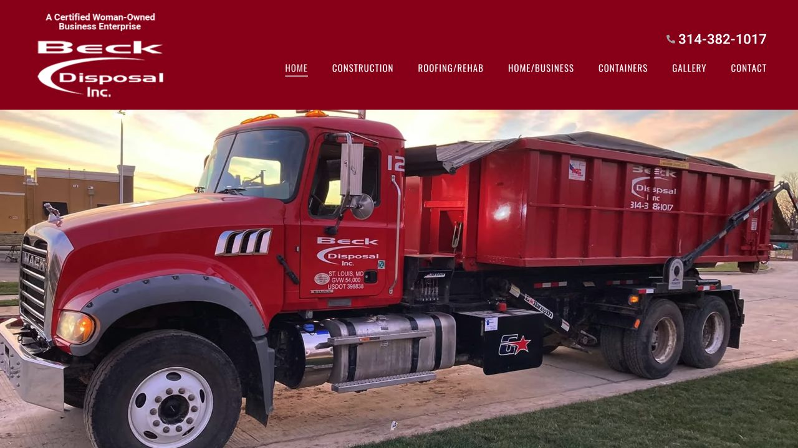

Lighter original photography
Responsive AVIF versions of Beck's original hero images reduce transfer while keeping the familiar trucks and service scenes.
Speed and reliability work for a St. Louis service business, while preserving the company's original truck photography and familiar site identity.

The work targeted the parts of the existing site that slowed or broke the visitor experience. The final public version keeps Beck's own hero photographs and page structure.
Responsive AVIF versions of Beck's original hero images reduce transfer while keeping the familiar trucks and service scenes.
Missing generated styles had caused intermittent broken pages. The site now checks and restores the needed page and shared styles before rendering.
Menu targets, hero framing, font loading, image priority, and mobile behavior received focused checks.
Optional analytics waits for a verified choice, with a persistent way to review or withdraw that choice.
The October 2026 release was reopened in WordPress and checked on the public site. Original desktop hero images, mobile variants, menu behavior, and complete page styles were verified across both site origins after a controlled cache refresh.
Bring the current site, the pages that matter most, and the problems your customers or team have noticed.
Request a website audit